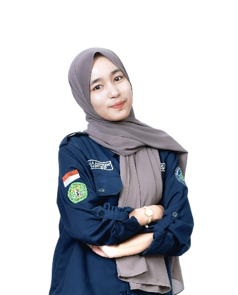
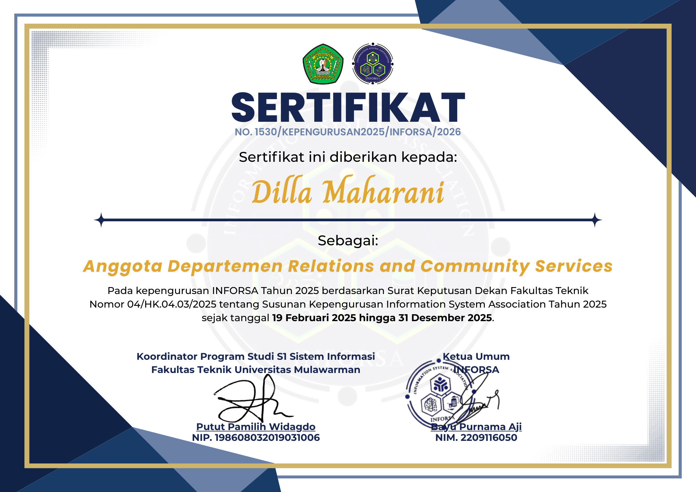
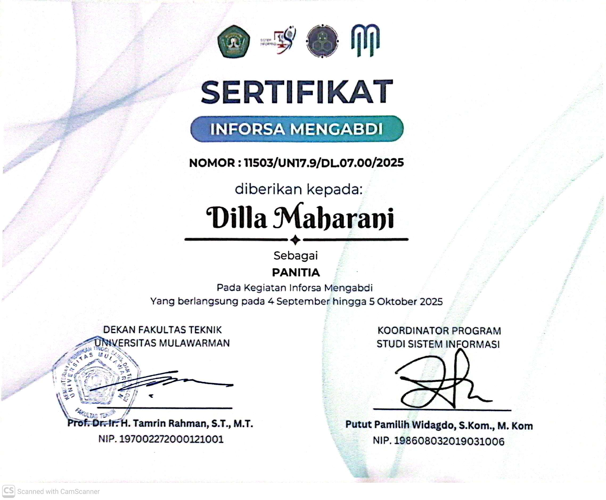
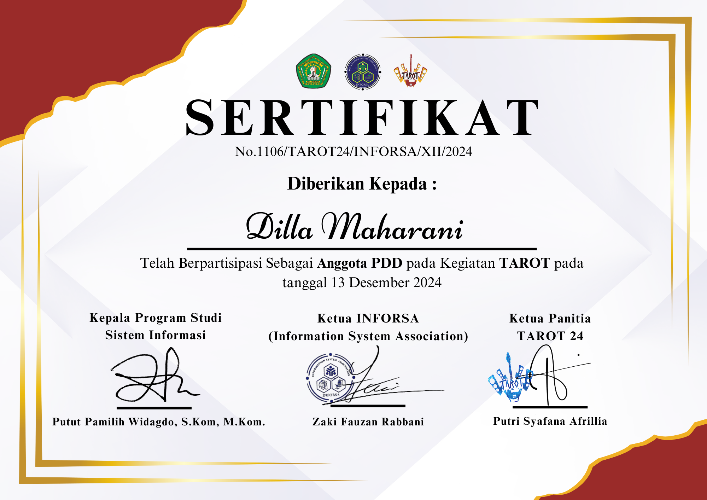

dillaaamhrn
dillaaamhrn
Halo 👋🏻,
Saya Dilla Maharani
Mahasiswa Sistem Informasi 👩🏻💻 | Fakultas Teknik ⚙️ | Universitas Mulawarman 🏫
Sebagai mahasiswa Sistem Informasi, saya memiliki ketertarikan dalam pengembangan website dan desain UI/UX. Website ini merupakan mini project yang saya kembangkan menggunakan HTML dan CSS sebagai bentuk eksplorasi dan pengembangan keterampilan di bidang front-end development 𓍢ִႋ🌷͙֒ᰔᩚ.

Hard Skill
Soft Skill
Pengalaman
Mini Project Website
Front-End Developer • 2026Membuat website personal menggunakan HTML dan CSS dengan konsep responsive layout dan desain UI sederhana.
Organisasi Mahasiswa (INFORSA)
Staff Departemen RELACS • 2024-2025Berpartisipasi dalam perencanaan kegiatan dan bekerja sama dalam tim untuk menjalankan program kerja organisasi.
INFORSA Safari Ramadhan (INSAN)
Divisi Perlengkapan (Perkap) • 2025Bertanggung jawab dalam penyediaan dan pengelolaan perlengkapan acara, termasuk koordinasi kebutuhan teknis serta memastikan kesiapan peralatan sebelum dan sesudah kegiatan.
INFORSA Mengabdi
Divisi Humas • 2025Bertanggung jawab dalam komunikasi dan penyebaran informasi acara serta menjalin kerja sama dengan pihak eksternal.
MAKRAB Sistem Informasi 2024
Divisi PDD • 2024Bertanggung jawab dalam pembuatan desain promosi dan pengelolaan konten publikasi acara.

INFORSA 2024
Staff Departemen RELACS | 2024-2025

INFORSA Mengabdi 2025
Anggota Divisi Humas | 2025

MAKRAB SI 2024
Anggota Divisi PDD | 2024